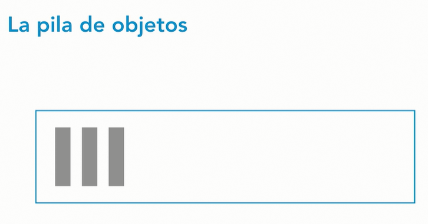
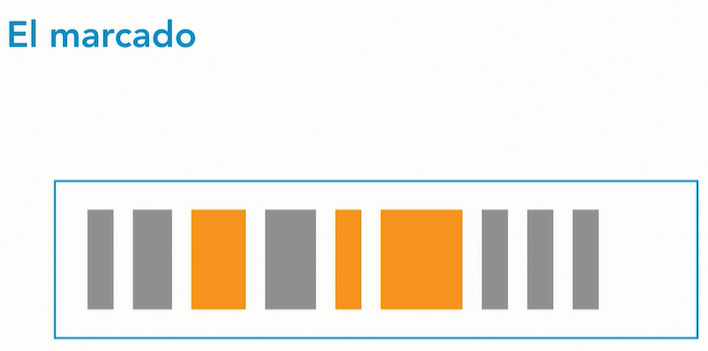
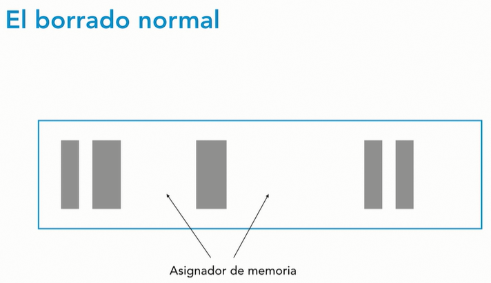
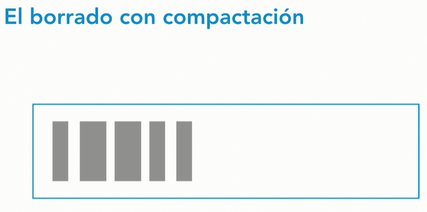
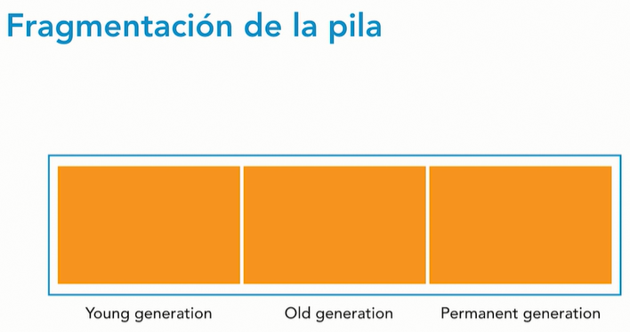
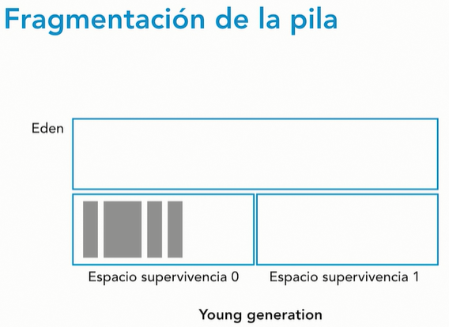
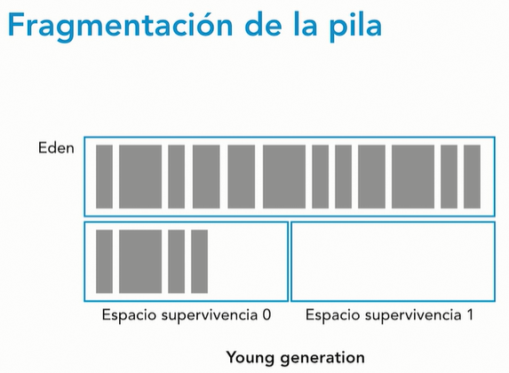
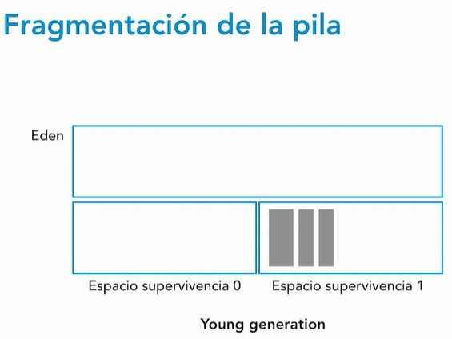
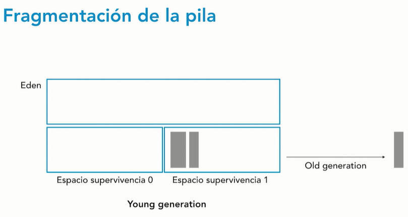

Recolector de basura - Garbage collector
El recolector de basura es una de las características que hacen de Java un lenguaje de programación de uso muy sencillo a la vez que eficiente. Es un mecanismo que usa Java para liberar de la memoria los objetos que ya no están siendo usados.
La máquina virtual de Java tiene una pila donde se guardan todos los datos de los objetos que son creados por un programa. El recolector automático de basura se encarga de observar esa pila de memoria e identificar qué objetos están en uso y cuáles no lo están. Que un objeto esté en uso significa que alguna parte de tu programa mantiene todavía un puntero hacia ese objeto. La memoria que ocupan los objetos que ya no están en uso puede ser reclamada. En algunos lenguajes de programación es el programador quien debe desalojar el objeto de memoria cuando no se prevé que vaya a volver a usarse, pero en Java se encarga de este trabajo el recolector de basura. Por ejemplo, en lenguaje C, es responsabilidad del programador desasignar la memoria asignada dinámicamente mediante la función free (). La recolección de basura en Java se realiza automáticamente durante la vida útil del programa, lo que elimina la necesidad de desasignar la memoria, evitando así las pérdidas de memoria.
Garbage Collector es un programa que administra la memoria automáticamente, en donde la desasignación de objetos es manejada por Java en lugar del programador. Funciona observando la pila o heap de memoria, identificando a qué objetos se hace referencia y a cuáles no, y eliminando los objetos no utilizados. Esto es conocido como el “algoritmo de marca y barrido”. Un objeto una vez creado utiliza algo de memoria y la memoria permanece asignada hasta que haya referencias para el uso del objeto. Cuando no hay referencias a un objeto, se supone que ya no es necesario, y la memoria, ocupada por el objeto puede ser reclamada. No hay necesidad explícita de destruir un objeto ya que Java maneja la desasignación automáticamente. La técnica que logra esto se conoce como recolección de basura. Los programas que no desasignan la memoria pueden bloquearse cuando no queda memoria en el sistema para asignar. Se dice que estos programas tienen pérdidas de memoria.
Marcado
El primer paso realizado es el marcado. Aquí el recolector de basura identifica qué partes de la memoria están en uso y cuáles no. En la imagen, se ven en gris los objetos que mantienen alguna referencia y en naranja, los que no. Este proceso puede llevar mucho tiempo si hay que recorrer todos los objetos de un sistema para la comprobación.
Borrado
Una vez marcados los objetos que ya no están siendo usados, el siguiente paso sería borrarlos.
Borrado normal
El recolector de basura elimina los objetos no referenciados, liberando así parte de memoria. El asignador de memoria mantiene una lista con las referencias a los bloques de memoria libres que pueden ser asignados a nuevos objetos.
Borrado con compactación
Para mejorar el rendimiento, además de borrar los objetos que no están en uso, también se puede compactar los objetos que quedan, moviéndolos todos al inicio del bloque de memoria. Esto hace que la tarea de asignación de memoria sea más sencilla y rápida, porque de este modo, el asignador de memoria solo necesita guardar la referencia del siguiente punto de memoria libre.
Tiene un costo en operaciones para compactar la memoria.
Fragmentación de la pila
El tener que mantener una lista con todos los espacios libres es algo muy ineficiente y el tiempo de uso del recolector de basura va aumentando conforme crece el número de objetos. Realizando estudios con diferentes aplicaciones se ha visto que la mayor parte de los objetos tienen un tipo de vida corto. Este conocimiento ha llevado a fragmentar la pila de memoria en diferentes zonas.
La zona Young generation es donde se almacenan los nuevos objetos. Cuando esta zona se llena, esto causa una recolección de basura menor. Todas las recolecciones de basura menores son eventos de parar el mundo. Esto quiere decir que todos los hilos de la aplicación son parados hasta que la operación es completada.
Cuando un objeto ha pasado el tiempo suficiente en la zona Young generation, es movido a la zona Old generation, que se usa para guardar objetos que han sobrevivido durante un tiempo significativo. Cada cierto tiempo hay que realizar también una recolección de basura en esta zona. Estas recolecciones son recolecciones de basura mayores. Los eventos de recolección de basura mayor también son eventos de parar el mundo. Estas recolecciones de basura suelen ser más lentas, por lo que la frecuencia con la que se hacen debe ser ajustada dependiendo de cuál es la rapidez de respuesta aceptable para nuestra aplicación.
La zona Permanent generation contiene metadatos que necesita la máquina virtual de Java para describir las clases y métodos usados por la aplicación.
Detalle del proceso de recolección de basura
La Young generation está dividida en tres zonas que comienzan vacías. Los objetos nuevos se van alojando en la zona Edén. Cuando esta zona se llena, se produce el primer evento de recolección de basura menor.

En este evento, se marcan los objetos referenciados y no referenciados. Los referenciados pasan al Espacio de supervivencia 0 y el Edén se borra completamente.
Comienza un nuevo ciclo donde los nuevos objetos se vuelven a alojar en el Edén hasta que se vuelve a llenar.
Se produce de nuevo un evento de recolección de basura menor, donde se marcan los objetos como referenciados y no referenciados, tanto en el Edén como en el Espacio de supervivencia 0. Los objetos referenciados del Edén y del Espacio de supervivencia 0 pasan todos al Espacio de supervivencia 1. Y ambos, el Edén y el Espacio de supervivencia 0, son vaciados por completo.
Así, sucesivamente, en los siguientes ciclos de recolección de basura, los espacios de supervivencia van intercambiando los papeles y uno de ellos se vacía por completo mientras el otro retiene los objetos referenciados. Cuando los objetos que se mantienen en el espacio de supervivencia llegan a una determinada edad, pasan a la zona Old generation. En un momento dado, llegará un evento de recolección de basura mayor que limpiará y compactará esta zona.
